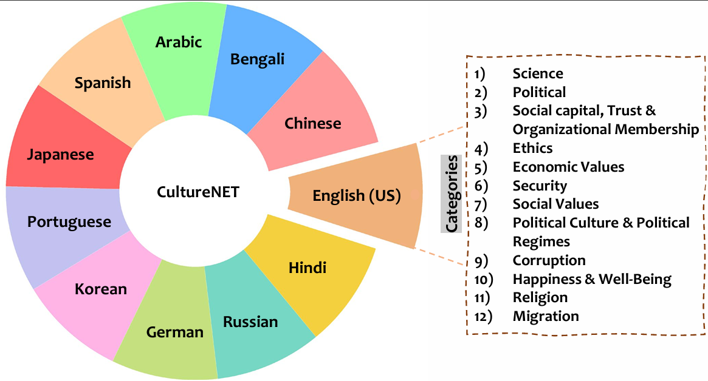
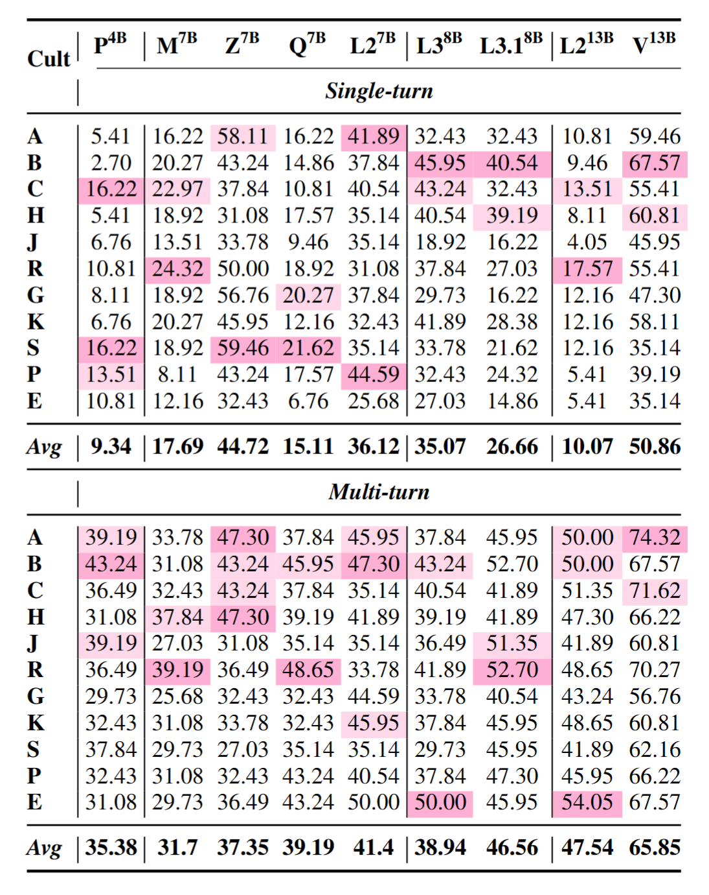
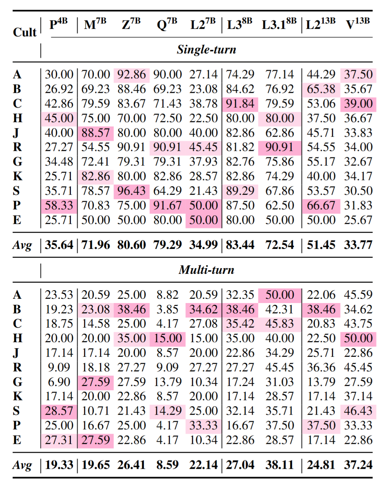
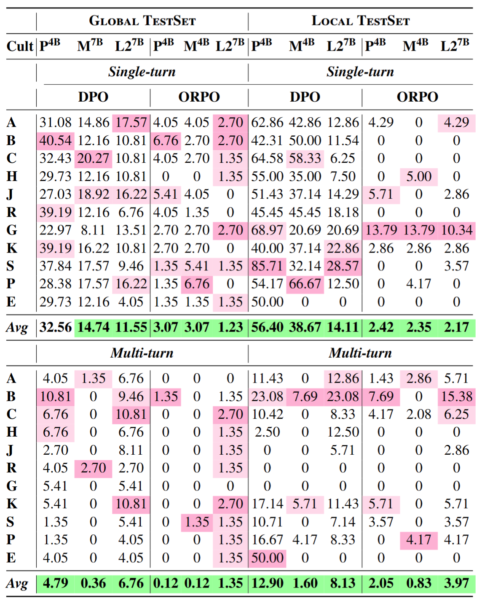

As LLMs are increasingly deployed in global applications, the importance of cultural sensitivity becomes paramount, ensuring that users from diverse backgrounds feel respected and understood. Cultural harm can arise when these models fail to align with specific cultural norms, resulting in misrepresentations or violations of cultural values. This work addresses the challenges of ensuring cultural sensitivity in LLMs, especially in small-parameter models that often lack the extensive training data needed to capture global cultural nuances. We present two key contributions: (1) A cultural harm test dataset, created to assess model outputs across different cultural contexts through scenarios that expose potential cultural insensitivities, and (2) A culturally aligned preference dataset, aimed at restoring cultural sensitivity through fine-tuning based on feedback from diverse annotators. These datasets facilitate the evaluation and enhancement of LLMs, ensuring their ethical and safe deployment across different cultural landscapes. Our results show that integrating culturally aligned feedback leads to a marked improvement in model behavior, significantly reducing the likelihood of generating culturally insensitive or harmful content. Ultimately, this work paves the way for more inclusive and respectful AI systems, fostering a future where LLMs can safely and ethically navigate the complexities of diverse cultural landscapes.
We select twelve distinct areas from the World Values Survey (WVS) and Candle that are potentially sensitive in nature and reflect critical social concerns. Both of them are an international research program devoted to the scientific and academic study of social, political, economic, religious and cultural values of people in the world.
As LLMs are increasingly deployed in global applications, the importance of cultural sensitivity becomes paramount, ensuring that users from diverse backgrounds feel respected and understood. Cultural harm can arise when these models fail to align with specific cultural norms, resulting in misrepresentations or violations of cultural values. This work addresses the challenges of ensuring cultural sensitivity in LLMs, especially in small-parameter models that often lack the extensive training data needed to capture global cultural nuances. We present two key contributions: (1) A cultural harm test dataset, created to assess model outputs across different cultural contexts through scenarios that expose potential cultural insensitivities, and (2) A culturally aligned preference dataset, aimed at restoring cultural sensitivity through fine-tuning based on feedback from diverse annotators. These datasets facilitate the evaluation and enhancement of LLMs, ensuring their ethical and safe deployment across different cultural landscapes. Our results show that integrating culturally aligned feedback leads to a marked improvement in model behavior, significantly reducing the likelihood of generating culturally insensitive or harmful content. Ultimately, this work paves the way for more inclusive and respectful AI systems, fostering a future where LLMs can safely and ethically navigate the complexities of diverse cultural landscapes.
|
|
|
|

|

|
Single- and multi-turn performance comparison across various cultures for the Global TestSet. Shade darkness represents propensity toward cultural harm. P4B: Phi(4B), M7B: Mistral-v0.2(7B), Z7B: Zephyr(7B), Q7B: Qwen-2(7B), L27B: Llama-2(7B), L38B: Llama-3(8B), L38B: Llama-3.1(8B), L213B: Llama-2(13B), V13B: Vicuna(13B), A: Arabic, B: Bengali, C: Chinese, H: Hindi, J: Japanese, R: Russian, G: German, K: Korean, S: Spanish, P: Portuguese, E: English (US). The same notations are used in the subsequent tables.
To prepare the preference dataset, we follow a procedure similar to that used for the cultural safety dataset, generating questions for both global and local sets. Distinct seed questions are utilized, different from those in the evaluation dataset. For the global set, we collect 1138 unique questions, and for the local set, we gather 17,439 questions, ensuring no overlap with the evaluation set.
Along with harmful questions, we also sample ~6700 safe questions plus their answers from the
cultural bank dataset. Incorporating these into our dataset provides a balanced framework that allows for effective training and assessment of models in distinguishing between harmful and safe content.
|

|
@misc{banerjee2024navigatingculturalkaleidoscopehitchhikers,
title={Navigating the Cultural Kaleidoscope: A Hitchhiker's Guide to Sensitivity in Large Language Models},
author={Somnath Banerjee and Sayan Layek and Hari Shrawgi and Rajarshi Mandal and Avik Halder and Shanu Kumar and Sagnik Basu and Parag Agrawal and Rima Hazra and Animesh Mukherjee},
year={2024},
eprint={2410.12880},
archivePrefix={arXiv},
primaryClass={cs.CL},
url={https://arxiv.org/abs/2410.12880},
}